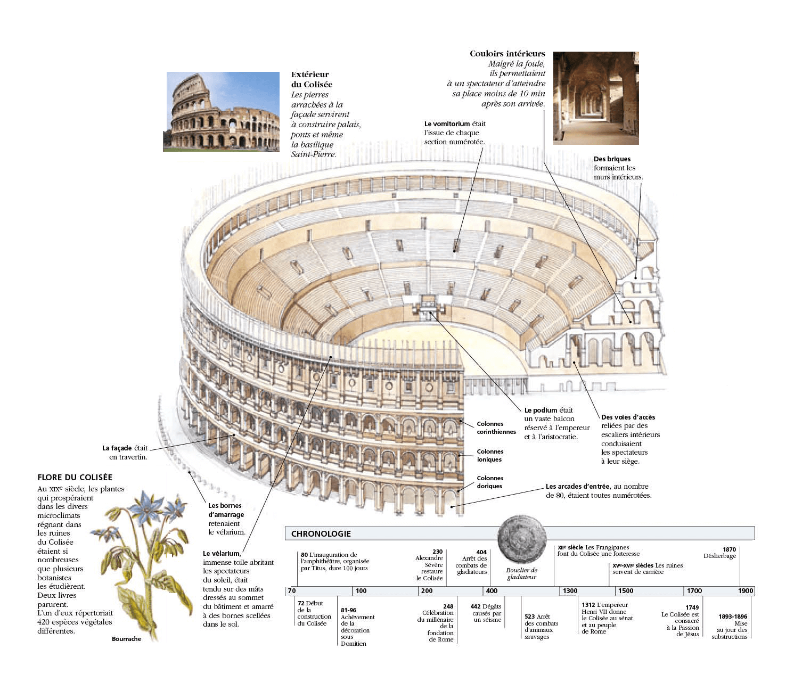

Le Colisée, à l'origine amphithéâtre Flavien (Colosseo en italien), est un immense amphithéâtre ovoïde situé dans le centre de la ville de Rome, entre l'Esquilin et le Cælius, le plus grand jamais construit dans l'Empire romain.
Il est l'une des plus grandes œuvres de l'architecture et de l'ingénierie romaines.
Sa construction, juste à l'est du Forum Romain, a commencé entre 70 et 72 apr. J.-C., sous l'empereur Vespasien, et s'est achevée en 80 sous Titus. D'autres modifications ont ensuite été apportées au cours du règne de Domitien (81-96)1. Le nom d'amphithéâtre Flavien dérive du nom de famille (gens Flavii) de l'empereur Vespasien et ses fils Titus et Domitien. Pouvant accueillir probablement 50 000 spectateurs (les estimations plus anciennes de 80 000 spectateurs, soit un douzième de la population romaine, étant exagérées)2, le Colisée a été utilisé pour les venationes (combats d'animaux sauvages), les munera (combats de gladiateurs) et autres spectacles publics, tels que des exécutions de condamnés à mort, des reconstitutions de batailles célèbres et des drames basés sur la mythologie romaine. Il est resté en service pendant près de 500 ans, les derniers jeux se prolongeant jusqu'au vie siècle.
Pour l'inauguration du Colisée, en 80 apr. J.-C., Titus donne une naumachie dans le Colisée transformé en bassin reconstituant la bataille navale de Corinthe contre Corcyre. Le bâtiment a finalement cessé d'être utilisé au cours du haut Moyen Âge. Il a plus tard été réutilisé pour des usages variés tels que des habitations, des ateliers d'artisans, le siège d'un ordre religieux, une forteresse, une carrière et un sanctuaire catholique chrétien.
Le Colisée est actuellement en état de ruine, en raison des dommages causés par les tremblements de terre et la récupération des pierres, mais il continue à donner la mesure de l'ancienne puissance de la Rome Impériale.
Aujourd'hui, il est l'un des symboles de la Rome moderne, une de ses attractions touristiques les plus populaires avec 7,6 millions de visiteurs, et a encore des liens étroits avec l'Église catholique romaine : chaque Vendredi saint, le pape mène une procession aux flambeaux sur un chemin de croix aboutissant à l'amphithéâtre. Le Colisée est représenté sur la pièce de monnaie italienne de 5 centimes d'euro.

Historique
Après le grand incendie de Rome en 64 apr. J.-C, Néron se fit construire un somptueux palais. S'étant saisi de terrains au fond d'une vallée basse au fond de laquelle courait un ruisseau canalisé, entre le Cælius, l'Esquilin et le Palatin, il fit édifier la magnifique Domus aurea. Devant des pavillons, jardins, et portiques, il créa un lac artificiel et fit placer le Colosse de Néron non loin de l'entrée du domaine. L'aqueduc préexistant de l'Aqua Claudia fut prolongé pour l'approvisionnement en eau de cette zone11.
À sa mort en 68, Néron fit l'objet d'une damnatio memoriae. La zone fut transformée par Vespasien et ses successeurs. La statue colossale fut conservée, mais on démolit une grande partie de la Domus aurea dont les vestiges servirent de fondations aux thermes de Trajan. Le lac fut comblé et le terrain réutilisé pour la construction du nouvel Amphithéâtre Flavien qui était destiné à remplacer l'amphithéâtre de Statilius Taurus ravagé lors du grand incendie de Rome12.
La construction du Colisée commença autour de 70-72 (le début et la durée des travaux de construction restent incertains, mais selon la plupart des historiens, ils durèrent environ dix ans, avec deux années supplémentaires pour la finition13) sous le règne de l'empereur Vespasien dont la décision peut être vue comme un geste populiste de retour au domaine public d'un quartier annexé par Néron pour son propre usage
Contrairement à beaucoup d'autres amphithéâtres situés à la périphérie des villes, le Colisée fut construit littéralement et symboliquement au cœur de Rome. Des écoles de gladiateurs et d'autres bâtiments annexes furent construits à proximité. À la mort de Vespasien, en 79, le troisième étage du Colisée était achevé. Le dernier niveau fut inauguré par son fils Titus, en 80. Dion Cassius rapporte que 9 000 bêtes sauvages furent tuées lors des jeux inauguraux. Le bâtiment fut ensuite rénové par Domitien, fils cadet de Vespasien, empereur nouvellement désigné, qui ajouta l'hypogée, réseau de souterrains utilisés pour abriter les animaux et les gladiateurs. Il adjoignit également une galerie tout au sommet du Colisée, destinée à accroître encore le nombre de places.